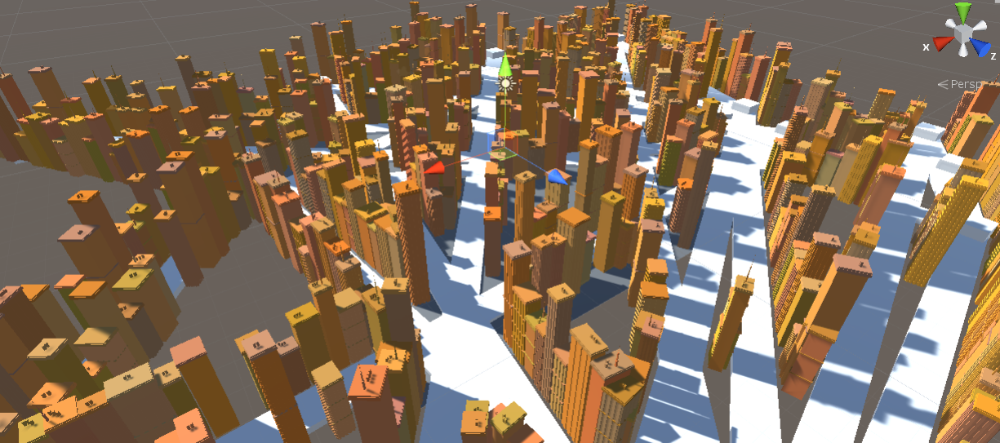

🏗️ Structural Generation
This research investigated existing methods of generating cities, compared them against real-world structural and social concerns, and improved upon representations in ways that begin to account for the depth of urban life.
- Maya MEL scripting to procedurally generate buildings; the buildings have variable complexity and style depending on historical "age" of the generated buildings
- Developed C# algorithms in Unity to procedurally generate cities bounded by realistic urban constraints; three main city structure types were: gridlike (a la Manhattan), radial (a la Paris), and random (a la Boston, or other places that are seemingly random but really affected by weathered terrain)
- You can read the full paper at this link
